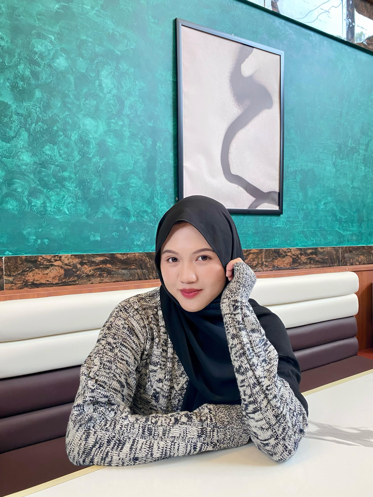

Inisiatif edukasi terpadu dari She She Adelita (Mahasiswi Universitas Lampung, Owner KeMaNa Cheese, sekaligus Finalis Top 30 Duta Ekonomi Syariah BSI) untuk mendampingi UMKM kuliner naik kelas secara legal, halal, dan bebas riba.
Panduan Praktis Sertifikasi Halal & Manajemen Keuangan Syariah untuk UMKM Kuliner
Memahami payung hukum Jaminan Produk Halal di Indonesia serta peran tiga lembaga utama yang mengawal terbitnya sertifikat halal bagi pelaku UMKM.
Regulasi resmi pemerintah yang wajib dipatuhi pelaku usaha
Menegaskan bahwa produk yang masuk, beredar, dan diperdagangkan di wilayah Indonesia wajib bersertifikat halal.
Mengatur teknis penyelenggaraan sertifikasi halal, mekanisme pernyataan pelaku usaha (Self Declare), serta pengawasan produk.
Mempertegas implementasi wajib sertifikat halal bagi produk makanan, minuman, bahan baku, bahan tambahan pangan, bahan penolong, serta hasil sembelihan dan jasa penyembelihan.
Berdasarkan ketentuan perundang-undangan JPH, pelaku usaha yang mengabaikan kewajiban sertifikasi halal berisiko dikenakan sanksi administratif berjenjang:
Teguran resmi dari otoritas pengawas JPH disertai sanksi administratif.
Produk pangan/minuman yang tidak memenuhi ketentuan wajib ditarik dari pasar & etalase ritel.
Wajib mencantumkan keterangan tidak halal secara jelas pada kemasan produk sehingga menurunkan daya saing di pasar mayoritas muslim.
Sinergi tiga lembaga resmi yang menjamin keabsahan dan kehalalan produk UMKM
Badan Penyelenggara Jaminan Produk Halal (Kemenag RI)
Regulator utama penyelenggaraan Jaminan Produk Halal di Indonesia. Bertugas menerima pendaftaran melalui sistem SIHALAL, memverifikasi kelengkapan dokumen, serta menerbitkan Sertifikat Halal resmi lengkap dengan logo halal ungu & nomor ID terdaftar.
Majelis Ulama Indonesia / Komite Fatwa Produk Halal
Lembaga otoritas keagamaan yang melaksanakan sidang penetapan fatwa untuk mengkaji dan menetapkan kehalalan suatu produk berdasarkan laporan hasil verifikasi bahan dan proses produksi sebelum sertifikat halal diterbitkan oleh BPJPH.
Lembaga Pendamping Proses Produk Halal
Lembaga resmi tempat bernaungnya Pendamping PPH yang terjun langsung ke lapangan membimbing pelaku UMKM, memverifikasi kehalalan seluruh bahan baku, serta meninjau kelayakan dapur dan proses produksi.
Langkah praktis pengajuan sertifikasi halal dari persiapan berkas hingga terbitnya sertifikat digital dan kemudahan pembayaran melalui BSI.
Siapkan 5 berkas utama sebelum pendampingan
Portal resmi pendaftaran: ptsp.halal.go.id
Registrasi akun pelaku usaha di laman ptsp.halal.go.id menggunakan email aktif dan aktivasi akun.
Sinkronisasi data Nomor Induk Berusaha (NIB), pilih skala usaha mikro/kecil, dan tentukan jenis produk.
Unggah daftar bahan baku bersertifikat halal, narasi alur produksi, matriks produk, dan pilih LP3H pendamping.
Pendamping PPH melakukan verifikasi langsung ke lokasi produksi UMKM dan mengirimkan laporan verval ke sistem.
Setelah penetapan fatwa MUI/Komite Fatwa, BPJPH menerbitkan Sertifikat Halal Digital yang dapat langsung diunduh dan dicetak.
Fasilitasi sertifikasi halal gratis dari pemerintah (BPJPH) untuk pelaku Usaha Mikro dan Kecil (UMK) dengan produk tidak berisiko/bahan sudah pasti halal, saat kuota SEHATI sedang terbuka.
Apabila kuota gratis pemerintah telah terpenuhi, UMKM tetap dapat mengajukan sertifikasi melalui skema Self-Declare Mandiri dengan biaya sangat terjangkau mulai dari Rp 230.000. Sementara untuk usaha skala menengah/besar atau produk berbahan kompleks (seperti daging sembelihan segar) menggunakan Jalur Reguler melalui LPH (Lembaga Pemeriksa Halal).
Sistem pembayaran invoice pendaftaran sertifikasi halal di SIHALAL telah terintegrasi langsung melalui kerja sama resmi dengan Bank Syariah Indonesia (BSI).
Pembayaran terverifikasi otomatis secara real-time di sistem SIHALAL tanpa potongan biaya admin.
Pembayaran melalui bank selain BSI dikenakan biaya admin transfer antarbank sesuai ketentuan masing-masing bank.
Simulasi proses verifikasi faktual saat Pendamping PPH mengunjungi dapur usaha kuliner (contoh: usaha kuliner olahan keju, bakery, dan minuman kekinian):
Memeriksa fisik kemasan dan mencatat nomor sertifikat halal pada setiap bahan baku kritis seperti tepung terigu, keju, susu UHT/kental manis, gula, mentega, serta perisa/topping.
Mengecek kebersihan peralatan masak (mixer, oven, loyang, wadah penyimpanan) serta memastikan area dapur bebas dari bahan haram/najis maupun kontaminasi silang.
Mencocokkan takaran resep aktual di dapur dengan daftar bahan dan matriks produk yang diinput ke aplikasi SIHALAL agar tidak ada bahan tersembunyi.
Mengambil foto bukti kunjungan lapangan bersama pelaku usaha, foto proses produksi, dan foto produk jadi untuk diunggah sebagai lampiran resmi ke SIHALAL.
Dirancang dengan bahasa yang ringan, aplikatif, dan langsung bisa dipraktikkan oleh pemilik kedai, katering, bakery, hingga minuman kekinian di seluruh Indonesia.
Ringkasan UU JPH, PP 40/2026, sanksi label non-halal, dan peluang pasar halal global.
Panduan visual pengisian NIB OSS, daftar bahan baku, serta tips lolos verifikasi Pendamping PPH.
Cara memisahkan uang dapur dan uang pribadi serta menentukan gaji pemilik usaha.
Pemanfaatan BYOND by BSI & KUR Super Mikro bebas riba untuk ekspansi peralatan UMKM.
Produk halal akan semakin berkah apabila ditopang pengelolaan arus kas yang jujur, transparan, dan terhindar dari praktik riba maupun gharar.
Pisahkan secara tegas antara rekening pribadi dan rekening operasional usaha. Tetapkan nominal gaji pemilik (owner salary) secara rutin setiap bulan agar modal belanja bahan baku tidak terpakai untuk kebutuhan rumah tangga.
Terapkan pencatatan transaksi yang transparan untuk setiap pemasukan, harga pokok produksi (HPP), dan bagi hasil kemitraan. Kejelasan akad, takaran, serta pembukuan mencegah sengketa dan menjaga keberkahan laba usaha.
Kelola rekening khusus usaha UMKM langsung dari genggaman dengan ekosistem digital perbankan syariah modern:
Solusi permodalan halal bebas riba bagi UMKM pemula dan pelaku usaha mikro untuk menambah peralatan dapur maupun bahan baku:
Kelola rekening khusus usaha UMKM langsung dari genggaman dengan ekosistem digital perbankan syariah modern:
Solusi permodalan halal bebas riba bagi UMKM pemula dan pelaku usaha mikro untuk menambah peralatan dapur maupun bahan baku:
Dokumentasi pendampingan langsung bersama pelaku UMKM lokal serta ruang diskusi aktif untuk konsultasi sertifikasi halal dan manajemen keuangan syariah.
Dapatkan info pembukaan kuota sertifikasi halal gratis SEHATI, tanya jawab kendala SIHALAL, tips pembukuan bebas riba, serta jejaring sesama pelaku UMKM kuliner yang saling mendukung.
Cerita perubahan dari para pemilik usaha kuliner di Bandar Lampung setelah mengikuti pendampingan kampanye Melek Halal, Melek Syariah.
"Awalnya saya bingung cara daftar sertifikat halal karena takut ribet dan mahal. Lewat Booklet dari Kak She She dan pendampingan komunitas, alhamdulillah NIB dan pengajuan SIHALAL usaha dimsum saya langsung beres!"
"Materi pemisahan kas usaha dan rekening pribadi benar-benar membuka mata saya. Sekarang saya pakai rekening khusus usaha di BYOND BSI yang bebas biaya admin bulanan, jadi untung harian kedai kopi kelihatan jelas."
"Sangat terbantu dengan grup WhatsApp Komunitas UMKM Siap Halal. Setiap ada pertanyaan soal cek sertifikat halal bahan baku kue atau informasi kuota SEHATI, langsung dibantu dengan ramah dan jelas."

Mahasiswi Universitas Lampung • Owner KeMaNa Cheese • Finalis Top 30 Duta Ekonomi Syariah BSI (SYLS 2026)
Sebagai mahasiswi Universitas Lampung sekaligus praktisi wirausaha muda yang membangun brand kuliner lokal KeMaNa Cheese, She She Adelita memahami secara langsung tantangan UMKM dalam mengelola arus kas harian dan mengurus legalitas sertifikasi halal.
Melalui ajang Sharia Young Leader Summit (SYLS) 2026 bersama Bank Syariah Indonesia (BSI), kampanye "Melek Halal, Melek Syariah" dihadirkan sebagai jembatan edukasi praktis agar semakin banyak UMKM kuliner yang berdaya saing, bersertifikat halal resmi, dan tumbuh berkah tanpa riba.